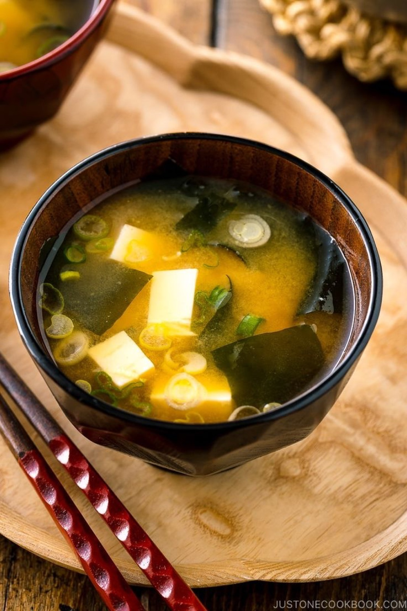

Falar de comida japonesa apenas como estética limpa é reduzir o washoku. Parte da profundidade está na fermentação: missô, shoyu, natto, vinagres, picles e caldos que dependem de tempo, técnica e micro-organismos.

O umami não aparece como truque moderno. Ele nasce de práticas antigas de conservação e combinação. O arroz encontra missô, peixe encontra shoyu, legumes encontram tsukemono, e o cotidiano ganha camadas discretas.
Por que isso importa
Para quem mora no Japão, entender fermentação ajuda a ler supermercado, konbini e cozinha doméstica. Nem todo sabor forte é estranho; muitas vezes é história química trabalhando no prato.